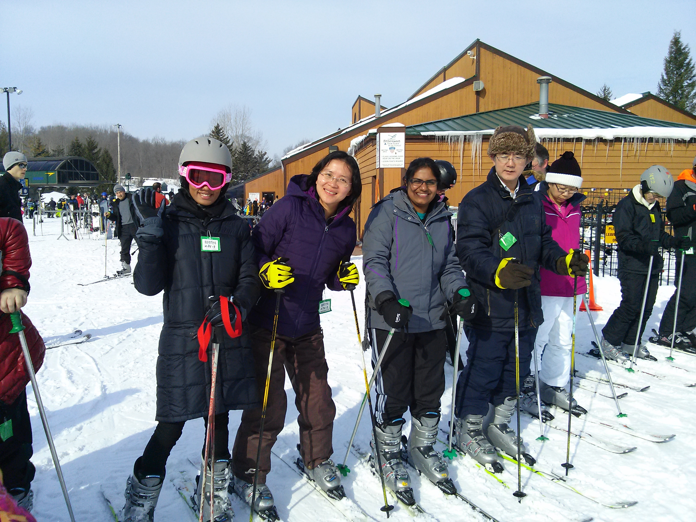

INTERNATIONAL CONNECTIONS
where Internationals and Americans come together



where Internationals and Americans come together
International Connections is a ministry of Sherwood Oaks Christian Church.
We provide opportunities for people from across the globe to meet people from other cultures and
learn about the Bible and Christianity and grow in the Christian faith.
Internationals from all countries and religious backgrounds are welcome to participate in each and every activity
we organize.
Interested in meeting other internationals and Americans in a fun and relaxed atmosphere? Then International Connections is for YOU! It’s a great opportunity to make new friends with other internationals and Americans here in the Bloomington community.
It doesn’t matter whether you are here as a student, working full-time, or whether you are single or married...!
International Connections is your gateway to finding friends and growing deeper with God!